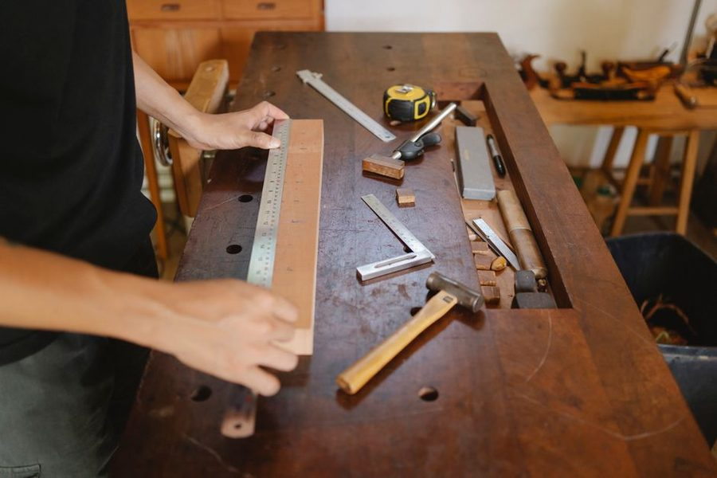

Rev. 2 · 18 mar · leitura de 5 minutos
Esquadro com a regra 3-4-5, sem comprar ferramenta nova
Um esquadro de mão confere 20 centímetros. Uma bancada de 1,80 m precisa de outra técnica, e ela não custa nada.

O esquadro comum resolve peça pequena. Em estrutura grande (bancada, portao, caixa alta) ele mede um canto de vinte centímetros e diz muito pouco sobre o conjunto: o quadro pode estar em losango e todos os cantos parecerem aceitaveis no esquadro de mão.
A regra 3-4-5
Marque 3 unidades em um lado a partir do canto e 4 unidades no outro lado. Se o canto estiver reto, a distância entre as duas marcas será exatamente 5 unidades. Unidade pode ser 10 cm, 30 cm ou 1 metro, desde que a mesma nos três lados.
Quanto maior a unidade escolhida, mais sensível o teste. Com 30/40/50 cm, um desvio de 3 mm na diagonal já denúncia o canto fora. Com 3/4/5 cm, esse mesmo desvio passa despercebido. Por isso vale usar a maior unidade que a peça comportar.
O teste das duas diagonais
Para conferir um retangulo inteiro, meça as duas diagonais. Se forem iguais, o quadro está em esquadro; se diferirem, ele está em losango, e a diferença aponta para qual lado empurrar antes de fixar.
Este é o teste que salva bancada, portao e caixa grande, e ele funciona mesmo com o material já montado e apenas parafusado por um ponto. Ajuste, meça de novo, e só então fixe o resto.
Como travar depois de ajustar
Estrutura em esquadro tende a voltar ao losango enquanto e manipulada. A solução clássica é o travamento em diagonal: uma ripa fina parafusada de canto a canto, provisoria, que segura a geometria até a fixação definitiva.
Em móveis fechados, o próprio fundo (compensado ou MDF fino) cumpre esse papel quando e cortado em esquadro e parafusado nas quatro bordas. Um fundo torto faz o oposto: entorta a caixa inteira ao ser fixado.
Piso e parede raramente são retos
Antes de culpar o próprio trabalho, confira a referência. Parede de canto costuma fugir do ângulo reto, e piso costuma ter caimento. Um móvel perfeito instalado contra uma parede fora de esquadro vai parecer torto, e o ajuste correto é no móvel, com calço, e não na parede.
Por isso vale medir o vão em três alturas (base, meio e topo) antes de cortar qualquer peça que precise encaixar entre paredes. A menor das três medidas é a que manda.
O que anotar na prancheta
Registre a unidade usada no 3-4-5, as duas diagonais medidas e as três medidas do vão. Quando a peça não encaixar, esses três números dizem em segundos se o erro foi de corte, de montagem ou do próprio cômodo.
Este texto é revisado quando a prática mostra que a recomendação não se sustenta. A revisão vigente está indicada no topo da folha.